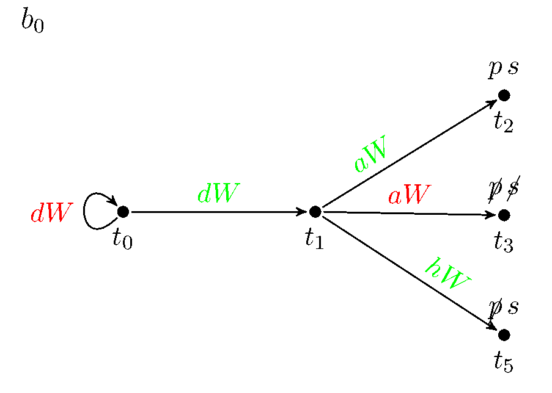
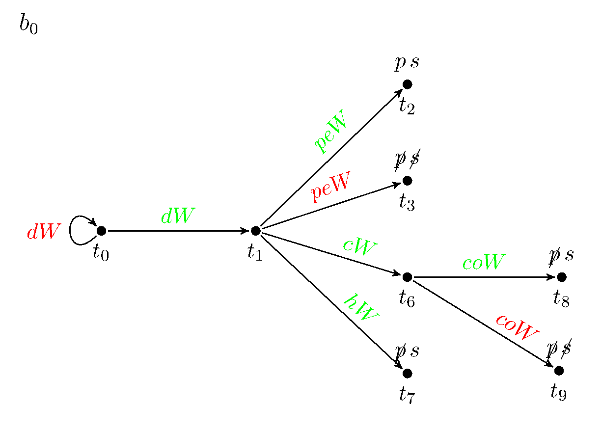
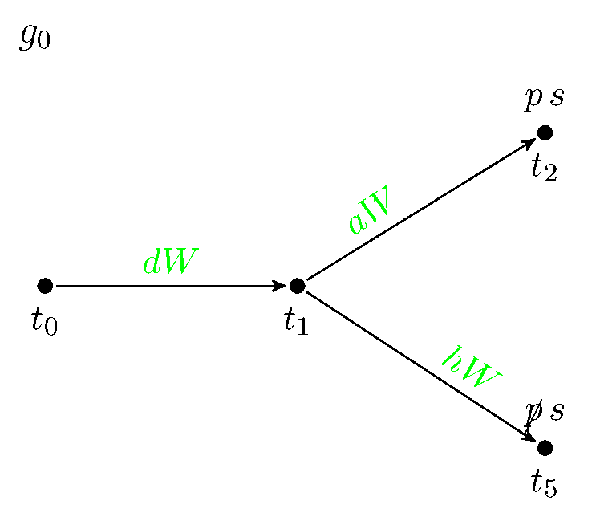
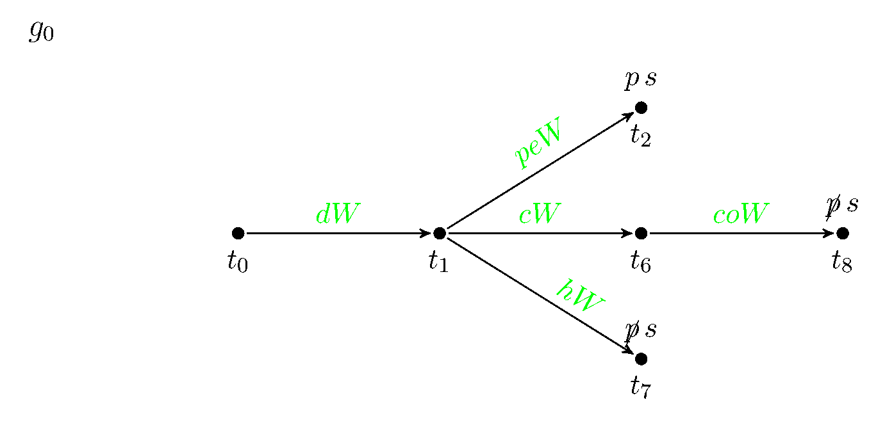
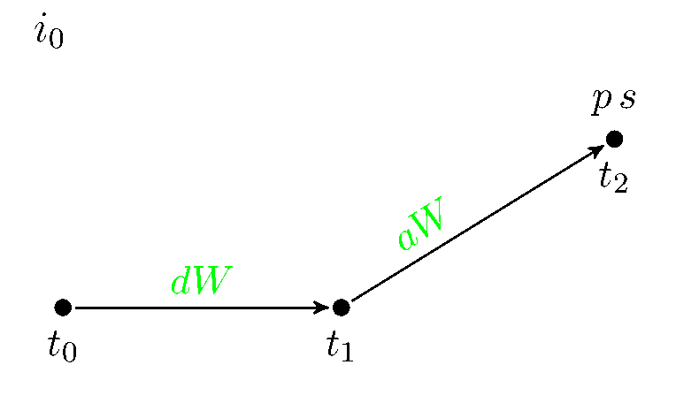
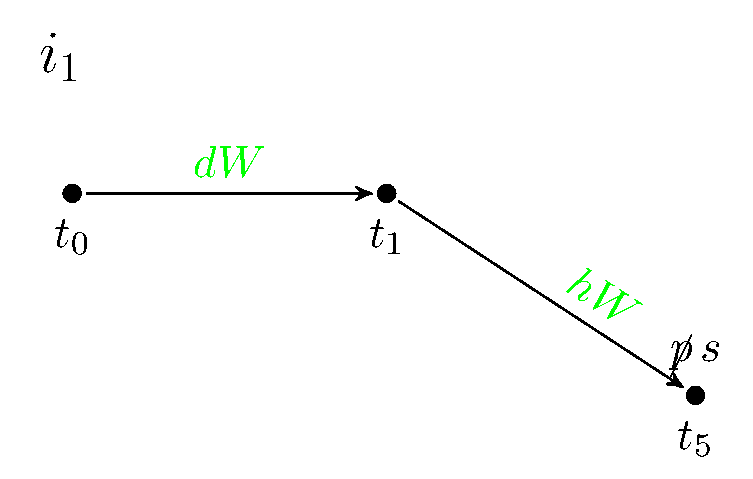
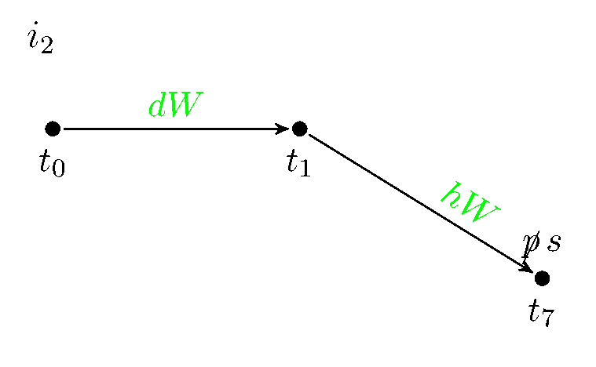

In the description of the original idea about the CoS, it was stated that one can deduce that only one kind of relationships is possible between worlds; one where a civs must destroy another upon discovering it asap. In our model we take the idea of chain of suspicion, and add a property to the civs: they can be benevolent or malevolent.
Our idea is to check whether it is possible for benevolent but cautious civs to maintain their primary need: survival
We add the notion of hiding, giving a civilization the possibility to avoid an encounter it believes to be lethal.
We will look at this possible explanation of the Fermi paradox by taking an epistemic approach. The general BDI models should explain what the believes, goals and intentions of a civilization can be. The Kripke model is used to explain how a civilization can reason about another civilization, and the intentions of this other civilization.
This general model shows the actual possible situations any kind of civilization can encounter, directed at possible actions during encounters with another civilization, and the consequences this has for their primary need: survival.
 
The believes of malevolent civilizations are modeled at the left, and at the right are the believes of benevolent civilizations.
 
To the left we find the goal model for malevolent civilizations, and to the right for benevolent civilizations.
|  | |
|  | |
|  |
At the left are the two models that depict the intentions of malevolent civilizations. At the right are the three intention-models for benevolent civilizations.